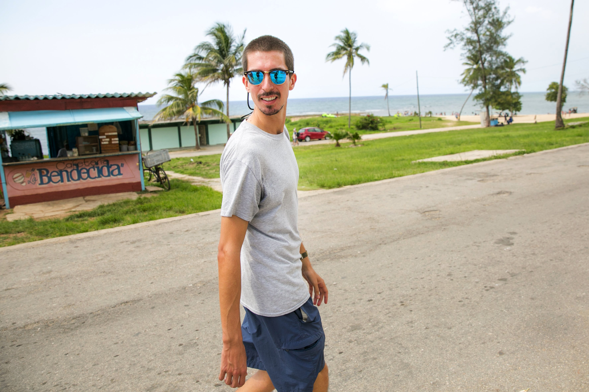

Classic cars and bicitaxis, similar to pedicabs, sputter through the streets of Centro Habana in the early morning hours.

Searching for Cuba’s future in the home of my ancestors
As the U.S. reconciles with Cuba, Seattle Times reporter Ángel González found a changing country regaining some capitalist bustle as it slowly doles out reforms. Some small entrepreneurs prosper, while those in state jobs, including professionals, struggle on an average salary of $24 a month. Meanwhile, the potential influx of U.S. tourists stokes hope among many.

A family in Camagüey uses a Wi-Fi hotspot in a public plaza to let a baby girl talk with her father.
Ingenious hacks link Cuba to the outside world
Internet connections are pricey in Cuba, but they make life less isolated. And for some enterprising people, renting Wi-Fi connections is a way to make a living.
Sol Bockelie, a medical student at the Latin American School of Medicine in Cuba, walks in Playa Baracoa, the beach town where he lives while attending school. Bockelie, 30, who attended University of Washington, is from Bremerton.
U.S. students get free ride in Cuban medical school
Cuba, known for its good health-care system despite deprivation, has lessons to teach the world, some experts say. A Bremerton man studying there intends to take his medical degree to underserved communities at home. And he won’t have daunting debt.